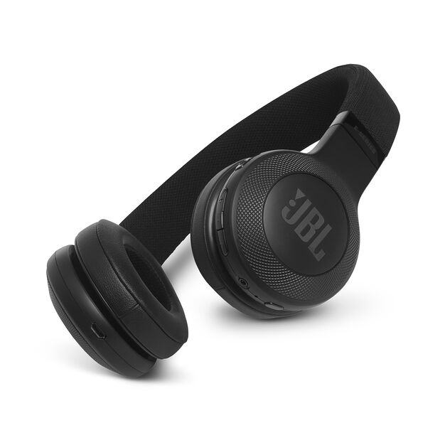

Skip to content
Électroniques
Maison
Beauté
Santé
Cuisine
Outils
Sports
Jouets
Bébés
Mode
Extérieur
Animaux
Jeux Vidéos
Livres
Rechercher :
Électroniques
Maison
Beauté
Santé
Cuisine
Outils
Sports
Jouets
Bébés
Mode
Extérieur
Animaux
Jeux Vidéos
Livres
Rechercher :
Rechercher :
Accueil
>
Électroniques
Électroniques
Comparatif des 10 meilleurs MTK6580
Motorola Moto E4 – Test et Avis
Kenwood bm450 – Test et Avis
Hotpoint AQD1070D69EU – Test et Avis
Asus S501UA – Test et Avis
Yamaha NP 11 – Test et Avis
Elephone P8 – Test et Avis
Ctek mxs 5.0 – Test et Avis
Lenovo Tab2 a10-70 – Test et Avis
Comparatif des 10 meilleures Montres Morphic
Lexmark CX310DN – Test et Avis
Oukitel Mix 2 – Test et Avis
Aspirateur Balai Fagor – Test et Avis
Logitech G430 – Test et Avis
Makita HP457DWE10 – Test et Avis
HP 17-CA0040NF – Test et Avis
Proscenic 790T – Test et Avis
Mecafer 425192 – Test et Avis
Comparatif des 10 meilleures Montres Tommy Hilfiger
Comparatif des 10 meilleurs Trotec TTK
Asus Chromebook Convertible – Test et Avis
Honor 7A – Test et Avis
HP Deskjet 2620 – Test et Avis
HP envy photo 6230 – Test et Avis
LG SJ3 – Test et Avis
Daikin FTX35 – Test et Avis
HP ENVY 13-ah0007nf – Test et Avis
Optoma HD142X – Test et Avis
Asus TP401NA – Test et Avis
Lenovo 120S-14IAP – Test et Avis
Motorola C Plus – Test et Avis
Somfy GDK 700 – Test et Avis
Asus Vivobook Flip – Test et Avis
Lenovo Yoga Tab 3 Plus – Test et Avis

JBL E45BT – Test et Avis
Daikin ftxs35k – Test et Avis
Pioneer Avic F970BT – Test et Avis
V500 somfy – Test et Avis
Comparatif des 10 meilleures Montres Saint Honoré
Hp deskjet 1110 – Test et Avis
Toshiba 55V5863DG – Test et Avis
Blackview P10000 Pro – Test et Avis
Lenovo Yoga Tab 3 Pro – Test et Avis
Alcatel XL 385 – Test et Avis
Xp-pen Artist 22 – Test et Avis
Henry Jay Montre – Test et Avis
Janome Melody 41 – Test et Avis
Yamaha Yas 207 – Test et Avis
Nikon Coolpix W300 – Test et Avis
Acer Aspire XC-780 – Test et Avis
Oukitel C8 – Test et Avis
Invictus X7 – Test et Avis
Aspirateur Techwood – Test et Avis
Hp envy 5020 – Test et Avis
Dell 3583 – Test et Avis
Pioneer HTP 074 – Test et Avis
Ordinateur Portable Terra – Test et Avis
Yamaha PSR F51 – Test et Avis
Kodak AZ422 – Test et Avis
Fujitsu Asyg 12 LLCC- 4KW – Test et Avis
Comparatif des 10 meilleures Montres Sekonda
Comparatif des 10 meilleures Montres Louis Villiers
Comparatif des 10 meilleures Montres Earnshaw
Comparatif des 10 meilleures Montres Linkoo
Comparatif des 10 meilleures Montres Smithfield
Comparatif des 10 meilleures Montres Swiss Legend
Comparatif des 10 meilleures Barres de Son Sony
Comparatif des 10 meilleurs Rowenta Aspirateurs
Comparatif des 10 meilleures Montres Eclock
Comparatif des 10 meilleurs Pulverisateurs Electriques
Comparatif des 10 meilleurs Aspirateurs Conga
Comparatif des 10 meilleurs Robots Aspirateur Laveur
Comparatif des 10 meilleures Scies Circulaires
Comparatif des 10 meilleures Montres Binger
Comparatif des 10 meilleures XP Pen Artist
Comparatif des 10 meilleurs Huawei MateBook
Comparatif des 10 meilleures Montres Kiwip
Comparatif des 10 meilleures Montres Lorus
Comparatif des 10 meilleurs Aspirateurs Klaiser
Comparatif des 10 meilleures Montres Bertha
Comparatif des 10 meilleures Montres Diggro
Aspirateur Robot Lebon E-Cleaner – Test et Avis
Canon SX540 HS – Test et Avis
Lenovo Ideapad 330-17AST-372 – Test et Avis
Hotpoint Aqualtis AQ113D – Test et Avis
Dyson AM10 – Test et Avis
Singer 4020 – Test et Avis
Sony L3 – Test et Avis
Comparatif des 10 meilleures Montres Reign
Comparatif des 10 meilleures Visseuses Stanley Fatmax
Comparatif des 10 meilleures Debroussailleuses Thermique
Comparatif des 10 meilleurs Aspirateurs Singer
Comparatif des 10 meilleurs Portables Doogee
Comparatif des 10 meilleurs Lenovo Ideapad
Leagoo S8 – Test et Avis
Sony HT MT300 – Test et Avis
Gaomon PD1560 – Test et Avis
Lexmark CX517DE – Test et Avis
BV7000 Pro – Test et Avis